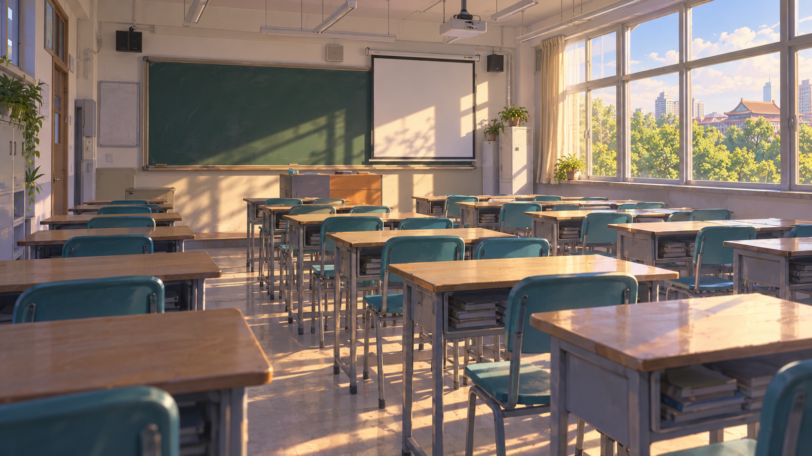

现有图片引用已修复
《镜中花》场景9：进入档案室后切换 archive；场景16：返回办公室后切换 mayor-office；场景18：医院探望切换 infirmary。修复同步进入生成源与剧情输出，25 项测试及构建通过。
审查说明与风格参考
新增图均为 1672 × 941，无人物；场景为美术演绎。办公室采用减光修订版，考场采用纯刻度钟面修订版。对白框为遮挡示意，非游戏界面的精确复刻。
审查状态和备注仅保存在当前浏览器；导出 JSON 可用于下一轮修改。整份目录可离线打开，无外部脚本或网络请求。
下载完整提示词与生成记录
没有符合条件的图片。